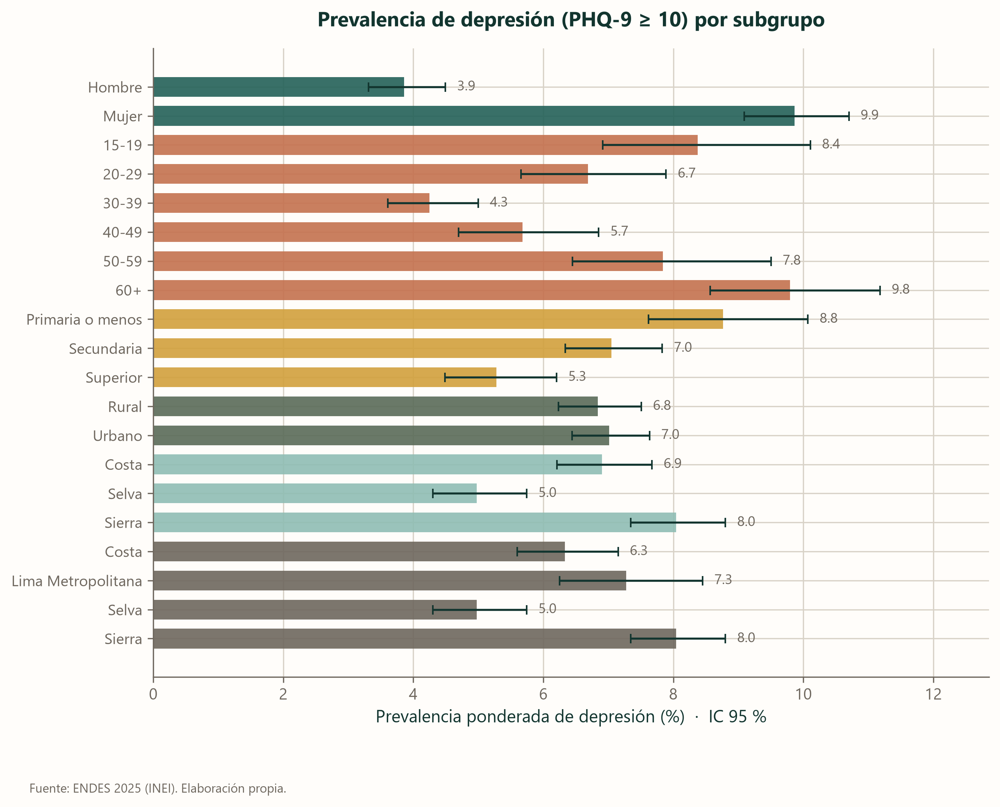
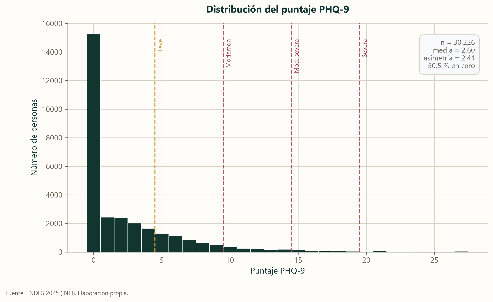
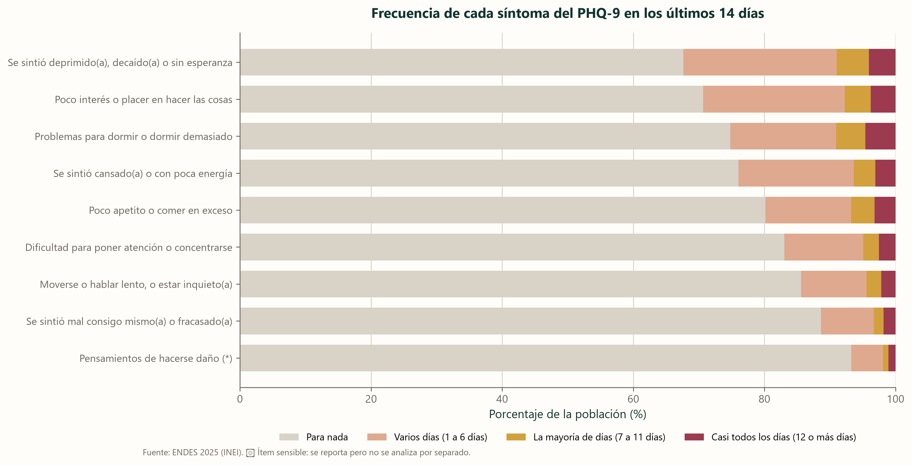

Quiénes son
La depresión no se reparte de forma pareja. Se concentra en unos grupos más que en otros, y el patrón dice bastante sobre el país.
Las mujeres presentan sintomatología depresiva dos veces y media más que los hombres
9,87 % frente a 3,86 %. Es la brecha más grande de todo el boletín, mayor que la que separa a la sierra de la selva o a quien terminó la primaria de quien terminó la universidad. Aparece en todos los grupos de edad y en todas las regiones, así que no se explica por ninguna de esas otras diferencias.

La mitad de las personas responde cero en las nueve preguntas
Ese pico en el extremo izquierdo no es un error: más de quince mil personas no reportaron ningún síntoma en dos semanas. La otra mitad se reparte en una cola que se adelgaza rápido. Esta forma —muchísimos ceros y unos pocos valores altos— es la razón por la que más adelante usamos regresión logística y no una regresión lineal corriente.

La edad dibuja una U
Si se mira la prevalencia por edad, el patrón no es el que suele imaginarse. No crece de forma constante con los años: baja hasta los treinta y vuelve a subir.
| Grupo etario | Personas | Prevalencia (%) | IC 95 % |
|---|---|---|---|
| 15-19 | 2713 | 8.37 | (6.91 – 10.11) |
| 20-29 | 6243 | 6.68 | (5.65 – 7.89) |
| 30-39 | 8284 | 4.25 | (3.61 – 5.00) |
| 40-49 | 4736 | 5.68 | (4.70 – 6.85) |
| 50-59 | 3257 | 7.84 | (6.45 – 9.50) |
| 60+ | 4993 | 9.80 | (8.57 – 11.18) |
Los dos extremos de la vida adulta son los más afectados: la adolescencia tardía, con 8,37 %, y las personas de 60 años o más, con 9,80 %. En medio, entre los 30 y los 39, la prevalencia cae hasta el 4,25 %, menos de la mitad.
El gradiente educativo
A menos años de estudio, más sintomatología: 8,77 % entre quienes llegaron como mucho a primaria, 7,05 % en secundaria y 5,28 % en educación superior. La diferencia sobrevive al ajuste por edad y sexo, así que no es solo que las personas mayores hayan estudiado menos.
Dormir mal y sentirse decaído son los síntomas que más aparecen
Cada barra reparte a la población entre quienes no sintieron nada, quienes lo sintieron algunos días y quienes lo sintieron casi a diario. Los problemas de sueño encabezan la lista, por delante del ánimo deprimido. Tiene una consecuencia práctica: quien consulta por insomnio puede estar consultando por depresión sin saberlo.

Búscate en los datos
Las cifras de arriba son promedios de grupos grandes. Abajo puedes cruzar varias características a la vez y ver cuántas personas así dieron positivo entre las 30 226 entrevistadas. No hay modelo ni predicción: es un recuento sobre la muestra, con su intervalo de confianza.
Elige las características y la cifra se actualiza sola.
Fuente: ENDES 2025 (INEI). Prevalencias ponderadas con el diseño muestral complejo. Solo se muestran combinaciones con al menos 100 personas y 20 casos positivos; cuando la combinación exacta no llega, se busca el grupo más específico que sí lo haga y se dice cuál es. Funciona sin conexión al servidor: los datos van dentro de esta página.